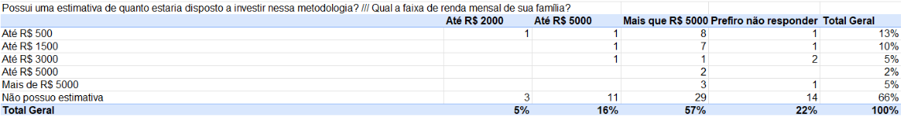

Investimento em Robótica Educacional no Brasil: Pesquisa de
Interesse e Viabilidade
Perguntas:
• Conhece ou já ouviu falar de Robótica Educacional?
• Você
acredita que ela pode contribuir para o futuro profissional dos
estudantes?
Pesquisa:
- 67% não conhecem bem o que é a robótica educacional, ainda é um
conceito mal conhecido pela população em geral.
- 86% dos entrevistados acreditam que a robótica educacional pode contribuir
para o futuro profissional dos estudantes.
- Grande potencial para a robótica educacional converter aqueles que ainda não a conhecem,
captação de famílias é o nosso foco principal.
- O conhecimento sobre
a robótica educacional está associado a uma crença positiva em seu
potencial, fortalecer essa imagem é essencial.
Pergunta:
• Possui uma estimativa de quanto estaria disposto a investir nessa metodologia?
• Qual a sua faixa de renda mensal familiar?
Pesquisa:

- A maioria das pessoas não tem uma estimativa de quanto estaria disposta a investir em robótica educacional.
- As pessoas com renda familiar mais alta são mais propensas a investir em robótica educacional.
- Independente das faixas de renda, o valor mais disposto a ser investido é até 1500 reais, então faremos vários robôs econômicos e duráveis para fidelizar o cliente.
Pergunta:
• Possui uma estimativa de quanto estaria disposto a investir nessa metodologia? (por cidade)
Pesquisa:
- A pesquisa revelou 70% dos entrevistados que conhecem e acreditam na robótica, investiriam na robótica educacional.
- Entre os que tinham, 45% gastariam até 3000 reais e 25% mais do que esse valor, podemos ter linhas de robôs mais tecnológicos e caros.
- São Paulo além de ser a cidade que mais conhece e acredita nessa metodologia, é a que mais investiria grandes valores tanto de lucros quanto de clientes.
- Ao focar em marketing e conhecimentos sobre os benefícios e o que é a robótica, os lucros e a eficácia do projeto mais do que dobra.
- Podemos prevenir o risco de acidentes com o manuseio e o descarte de robôs com equipe especializada. Priorizaremos e analisaremos o que podemos melhorar para evitar a perda de clientes.
- Segurança de Operações com Robôs: A segurança nas operações com robôs é crucial. É importante que os robôs sejam projetados para minimizar riscos e que haja procedimentos claros para sua utilização segura. Isso inclui treinamento adequado para os operadores e manutenção preventiva regular dos equipamentos.
- Assistência Técnica para Robôs: A assistência técnica eficiente é vital para manter a operacionalidade e segurança dos robôs. Os fabricantes devem oferecer suporte técnico especializado e peças de reposição para garantir que qualquer problema seja resolvido rapidamente.
- Relacionamento com Clientes em Negócios Eletrônicos: No comércio eletrônico, o relacionamento com o cliente é fundamental. As empresas devem se antecipar aos problemas e estar preparadas para responder rapidamente ao feedback dos clientes, seja ele positivo ou negativo. A gestão eficaz desse relacionamento pode incluir o uso de CRM e outras ferramentas para entender e atender às necessidades dos clientes